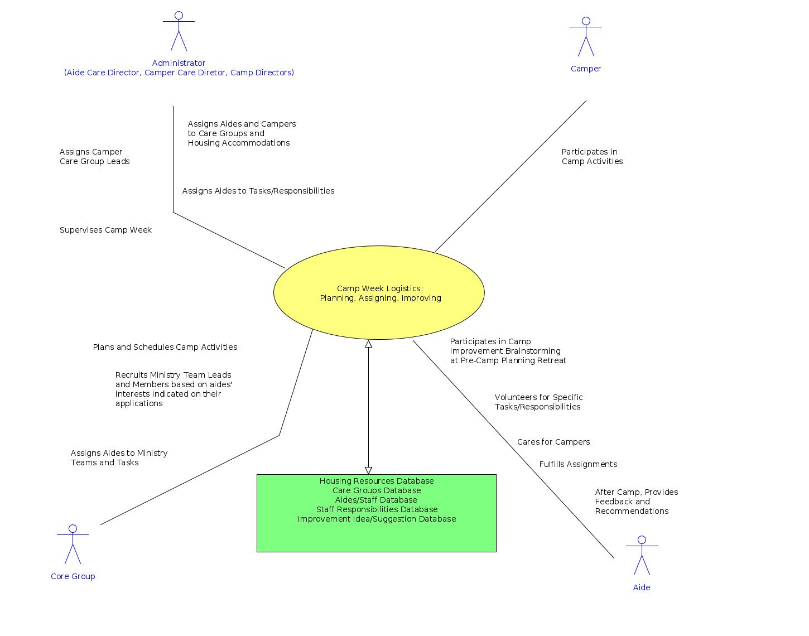

CAMP ADMINISTRATION INFORMATION SYSTEM
USE CASES
-
Use Case:
Safely Administer Medications
-
Goal:
Create a detailed medication schedule for each camper
to be used by Health Supervisors, Cabin Leads,
LA Bus Captain,
Administrators and Guardians.
-
Related Databases:
Campers Database
Meds Database
Med Admin Schedules Database
-
Use Case:
Deploy Aides
-
Goal:
Solicit, train, and deploy aides to perform the challenging
tasks related to the care and nurture of campers.
-
Related Databases:
Volunteer Recruiting Contacts Database
Aides/Staff Database
Aide Assessments/Recommendations Database

-
Use Case:
Camp Week Logistics
-
Goal:
Plan and schedule camp activities. Assign aides and campers to care groups
and determine care group leaders. Determine aide responsibilities and ministry
assignments. Determine ministry leads. Solicit feedback and recommendations
for current and future camps.
-
Related Databases:
Housing Resources Database
Care Groups Database
Aides/Staff Database
Staff Responsibilities Database
Improvement Idea/Suggestion Database
-
Use Case:
Accept Camper
-
Goal:
Based upon a detailed profile submitted by the family, determine whether
of not the applicant will benefit from the program and whether or not
the camp has the resources to meet the special needs of the applicant.
This determination is made for new and returning campers.
-
Related Databases:
Campers Database
Scholarship Requests Database